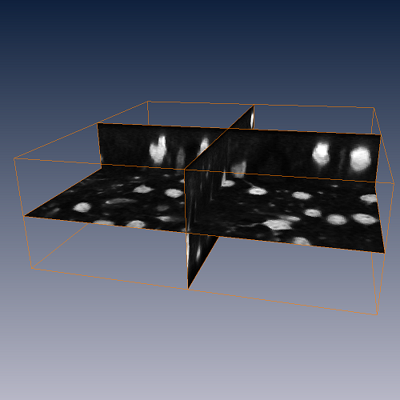
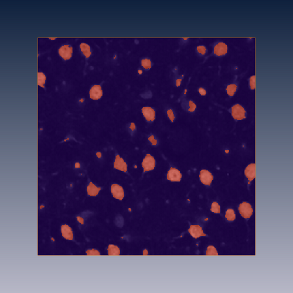
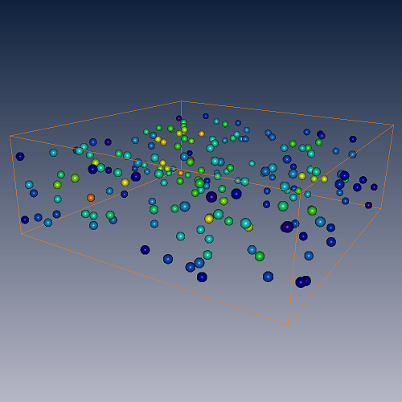
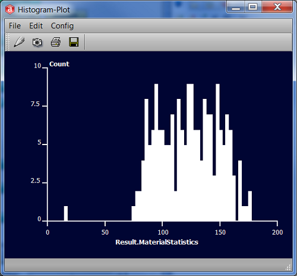
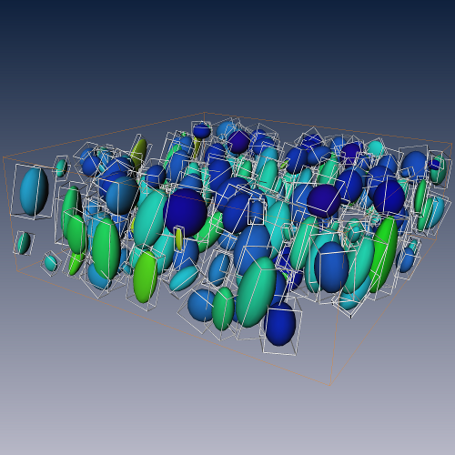
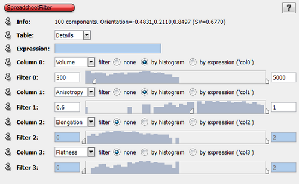
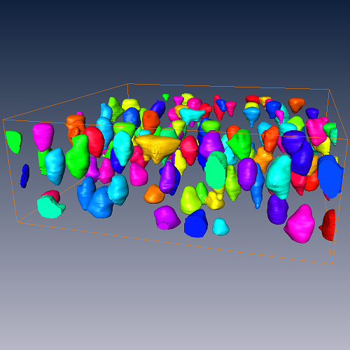

In biomedical imaging it is sometimes required to measure and quantify multiple objects such
as cells, vesicles, or puncta. This Option provides modules for an automatic segmentation of
the objects, their separation if they are clustering and their analysis according to shape.
Multi-Component Analysis Option license enables the following modules:
This User's Guide consists of a tutorial that explains the primary workflow. This tutorial will cover
the following topics:
- Create a binary segmentation of the objects (cell bodies)
- Separate clustering cells and label them individually
- Get number, size, and position of cells
- Measure cell density
- Filter the labeled image according to shape parameters
- Reconstruct and visualize filtered image as surface model
- Load /data/tutorials/multicomp/cellbodies.am into the Amira workspace (Pool).
- Visualize the data set using OrthoSlice. Browse through the slices using the Slice number port or use the interact mode in the viewer.
We see a number of bright spheroid structures embedded in a dark background. These bright structures are cell bodies (somata) of neurons from the rat cortex. The neurons have been stained with a selective fluorescent dye and imaged with a confocal microscope. The data are kindly provided by Marcel Oberlaender and Bernd Sakmann, Max Planck Florida Institute.

Figure 173:
Confocal image stack of rat cortex cell somata visualized with OrthoSlice
As a first step we need a binary segmentation of the image into foreground (cell bodies) and background voxels. Typically this is done with a threshold segmentation. The disadvantage of a simple threshold, however, is that if the threshold gray value is selected too low, unwanted background signal gets assigned to the foreground. On the other hand, if the threshold is selected too high, one might miss faintly stained cells. We tackle this problem with a module that uses two threshold values, one for detecting the bright regions and a second one that grows those regions until the lower threshold is reached.
- Right-click the data icon and attach →Labelling→LocalThreshold. Select the Hysteresis item from the Algorithm drop down menu.
- Set a value of 112 in the Seed threshold port and 70 in the Low threshold. Click Apply.
- Select the cellbodies.Labels icon in the Pool first and then right-click the OrthoSlice icon and choose the Colorwash item.

Figure 174:
Binary segmentation of the image stack. The label field is shown over the gray image using module ColorWash
Using module Colorwash with OrthoSlice allows one to quickly view what has been segmented. You may blend between the gray values and the labels by moving the Weight factor slider in the Properties Area of Colorwash. Browsing through the slices we note that some cell bodies have small unsegmented regions inside. Therefore, we would like to fill holes inside the cell bodies.
- Open the Segmentation Editor by clicking the corresponding icon in the Properties Area of the cellbodies.Labels object.
Click the Select button of material Inside to select all voxels associated with that material.
Click the Grow selection button in the Selection group, then select Selection/Fill/Volume from the menu and finally click the Shrink selection button in the Selection group.
- Click the Add button in the Selection group to add the voxels to the Inside material.
- Exit the Segmentation Editor by clicking the Object Pool icon in the sub-application taskbar.
The sequence of morphological operations Grow - Fill - Shrink is useful to close and fill incompletely labeled objects. If necessary, the number of dilations (grow) can be increased in which case the number of erosions (shrink) has to be increased by the same amount.
We note that in cases where cells are densly packed some of them they have been segmented into a single blob. Also, we cannot distinguish between individual cells since they all belong to the same material. Thus, as a next step, we need to separate clustering cell bodies and label them individually. Here we show how this could be acomplished using the WatershedSegmentation module.
For the watershed transform to work we need an image with "troughs", "crests", and "saddles" in the intensity domain. We can achieve this by calculating an inverted distance map of the labels object. In a distance map the value of each voxel denotes the closest distance to the region border. Inverting such a map yields an image where border voxels have high intensities thus forming a "crest" whereas center voxels become increasingly darker and therefore constitute the "troughs".
- Attach a Compute → DistanceMap module to the labels object, enable the float option in port Chamfer weights and click Apply.
- Attach Compute → Arithmetic to cellbodies.DistField object, enter -A + 6.81 into the Expr. text field and click Apply.
Subtracting all voxel values from the maximum (as inferred from the Info port of the distance transform) inverts the data with a minimum at zero.
- Attach Labelling → WatershedSegmentation to the result of the Arithmetic module. Enter in port Input threshold a value of 0.5 and a value of 1.8 in port Minimal depth. Click Apply.
- To monitor the result do the following: Reconnect the Data connection port of Colorwash with the output of module WatershedSegmentation (should be Result.regions), change the colormap in port Colormap to labelcolors.am.
Finding good values for Input threshold and Minimal depth typically requires some experimentation. The first computation using a particular value of the Threshold will take some time depending on the complexity of the image. Subsequent recomputations with different values of port Minimal depth then are much faster. When playing around with those values you will note that with increasing Minimal depth, increasing numbers of neighboring cells fuse into single regions. Decreasing Minimal depth, in contrast, tends to over-segment objects. The values of 0.5 (threshold) and 1.8 (depth) are a good compromise for this data set.
(load network)
Getting number, size, and positions of the cell bodies
The first part of the analysis aims to get number, size, and positions of the cell bodies.
- Attach Measure → MaterialStatistics to object Result.regions, connect the Field connection port therein with cellbodies.am and click Apply.
- Select the newly created object Result.Regions.MaterialStatistics and click the Show button. This opens a spreadsheet window displaying besides volume and position also densitometric figures (gray value statistics).
Measuring cell density
With the locations of our objects calculated we could ask what is the local density of cells. Module ClusterDensity can measure the local density of a cluster object. However, this requires that the positions of the cells be represented as vertices of a cluster object.
- Attach a Compute → SpreadSheetToCluster module to the spreadsheet and click Apply.
- To visualize the newly created cluster object attach a ClusterView module to it. Set the colormap in port Colormap to labelcolors.am, select the plates option and set Sphere scale to -0.5.
Now that we have the cluster object, we can calculate its density, that is how many cells are there per unit volume.
- Attach a Compute → ClusterDensity module to the cluster object. Click Apply.
- Visualize the resulting cluster object by reconnecting module ClusterView with the *.cluster.density object. Select physics.icol in port Colormap and in the Color drop-down menu choose the Density [d] item. To adjust the range right-click into the colormap window and select the Adjust to data range entry from the context menu.

Figure 175:
The positions of the cell bodies are represented by spheres and the coloring indicates the local density of cell bodies.
(load network)
Plotting a histogram of staining intensity
What is the distribution of mean staining intensity in the cells? To answer that question we take the output of the MaterialStatistics module.
- Right-click the *.MaterialStatistics object and select from Measure → Histogram.
- In the Properties of Histogram make the following settings:
Data: Mean, uncheck logarithmic of port Plot options, Number of bins: 60. Finally, press the Reset button in port Range to update the range for the histogram.
- Click Apply.

Figure 176:
The histogram shows the distribution of mean staining intensity of our cell bodies.
Extracting shape information from labeled regions and their visualization
While MaterialStatistics provided us with basic information on the cells, the following analysis aims to get parameters on the shape of the objects. Module ShapeAnalysis analyzes labeled regions by parameterizing each region as an ellipsoid. The parameters of the ellipsoid as well as derived measures such as elongation, flatness, and anisotropy for each object will be written into a spreadsheet object.
At this point it is recommended to clear the Amira workspace (Pool/Remove All Objects) and load the network data/tutorials/multicomp/ShapeAnalysis-start.hx. The remainder of this tutorial assumes that you did so. Of course, it is also possible to proceed with your current results. In that case, however, names of data objects as mentioned in the tesxt can be different.
- Attach a Measure → ShapeAnalysis module to cellbodies.labeledRegions.am and click Apply.
- Right-click the output (*.SpreadSheet) object and select from Compute the SpreadsheetToCluster entry.
- In SpreadsheetToCluster check the BoundingBoxes option in port Output and select the Fill BoundingBoxes button in port Tensor. Click Apply.
- Right-click cellbodies.labeledRegions.Cluster and choose from Display the TensorDisplay entry. In TensorDisplay uncheck the option FA in port Scale by value and click Apply.
- In order to visualize the bounding boxes attach a LineSetView module to the cellbodies.labeledRegions.BoundingBoxes object. In LineSetView select Circle in port Shape and set the slider in port Scale factor to 0.5.
(load network)

Figure 177:
Visualization of the result of ShapeAnalysis. Ellipsoidal approximation of the labeled regions visualized with TensorDisplay. Bounding boxes aligned with the main axes of the ellipsoids depict the spatial extent of each region.
Filtering labeled regions according to shape parameters
- Reload network data/tutorials/multicomp/ShapeAnalysis-start.hx
- Attach a Measure → ShapeAnalysis module to cellbodies.labeledRegions.am and click Apply.
- Attach a Compute → SpreadsheetFilter module to result of ShapeAnalysis.
- Select the SpreadsheetFilter icon. In the Properties, in port Column 0 choose the by histogram option and move the minimum slider in Filter 0 to 300.
- Likewise, in port Column 1 choose the by histogram option and move the minimum slider in Filter 1 to 0.6.
- Click Apply to create the filtered spreadsheet object.

Figure 178:
User interface of module SpreadsheetFilter. The module provides four pairs of ports that allow ranges to be set for user-defined columns of the input spreadsheet. The Filter ports use range sliders together with a histogram of the selected column for minimum and maximum settings.
In this way we extracted the information of all objects larger than 300 (cubic microns) and an elongation index larger than 0.6 (i.e., excluding the the strongly elongated cells) and stored it in a separate spreadsheet.
How do the filtered objects look like and where are they located within the volume? To answer that we create a label field containing only the objects of the filtered spreadsheet.
- Right-click the cellbodies.labeledRegions icon and select from Compute the FilterBySpreadsheet item.
- Connect the InputSpreadSheet connection port with the *.Spreadsheet.Filtered object and click Apply.
The result object is a label field cellbodies.labeledRegions.Labels.Filtered containing only a subset of the cell bodies.
Visualize filter results as a surface model
- Attach a SurfaceGen to the filtered label field (cellbodies.labeledRegions.Labels.Filtered). Check the auto-refresh option in the bottom bar of the Properties area. Also check auto-refresh in modules SpreadsheetFilter and FilterBySpreadsheet.
- Attach a SurfaceView module the new *.surf object in the Pool.
- To compare the filtered objects with the original data you may visualize the cellbodies.am data set with a Volren module (select a gray colormap and adjust the range to 66 ... 200).
Now each time the filter settings are changed, a recomputation of the surface model will be triggered. This allows you to quickly review filter settings.
In this way you may easily filter out regions that are not cell bodies. For example, you may want to remove small elongated regions, which are presumably unconnected parts of neurites. Similarily, you could remove objects that intersect with the bounding box by restricting the number of boundary voxels to 0.

Figure 179:
Surface reconstruction of the filtered label field.
- In SpreadsheetFilter select in the pull-down menu of port Column 2 the Boundary item. Also, select the by expression button.
- In the text field of port Expression enter col2 == 0.
After all compute modules have been updated, the surface will lack all cell bodies intersecting the bounding box.
(load network)
{kind=link}
{kind=link}
{kind=link}
{kind=link}
{kind=link}
{kind=link}
{kind=link}